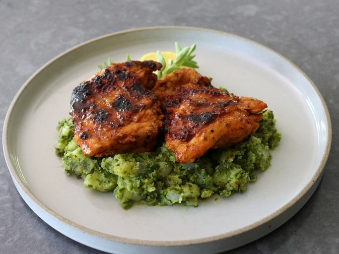

Churrasco Chicken
Home

Description
Chef John's churrasco chicken thighs are marinated in a beautiful garlic, chili, and herb
paste. It's some of the most juicy and flavorful grilled chicken you will ever have. Serve
with lemon wedges or chimichurri sauce—but the very best way to serve it is over our
Chimichurri Potato Salad.
Ingredients
- 8 chicken thighs, bone-in, skin-on
- 1 Fresno chili pepper or other hot pepper, seeded and sliced
- 1 teaspoon coarse sea salt
- 2 lemons, zested
- 1 1/2 teaspoons dried oregano
- 2 1/2 teaspoons paprika
- 1 1/2 teaspoons ground cumin
- 3 tablespoons red wine vinegar
- 2 tablespoons olive oil
- 1 lemon, juiced
- 2 teaspoons kosher salt, or to taste
- lemon wedges (optional)
Steps
- Make 2 very shallow cuts into the skin of the chicken thigh, perpendicular to the bone, about 1 inch apart, going through the skin, but not down to the bone.
- Flip thighs over, and make a cut directly on top of the bone in the same direction from one end to the other. Use a tip of the knife to trim on either side of the bone until you can slide your fingers underneath. Slide the knife underneath the bone, and cut toward both ends to remove the bone. Trim off any cartilage that remains.
- Place the prepped thighs into a resealable plastic bag set in a bowl.
- Add garlic, chili pepper, and sea salt to a mortar, and use the pestle to crush the mixture into a coarse paste.
- Add lemon zest, oregano, paprika, and cumin, and continue crushing and smashing until a relatively smooth paste is formed, about another minute.
- Add lemon juice, wine vinegar, and olive oil, and stir with the pestle until everything is emulsified.
- Transfer marinade into the bag of chicken thighs, along with the extra salt (1 teaspoon of salt per pound of meat is a good rule of thumb). Use tongs to mix very thoroughly. Squeeze out excess air and seal the bag tightly.
- Marinate in the refrigerator overnight. Chicken can be grilled after marinating just 2 or 3 hours, but overnight is much better.
- Prepare a charcoal grill until coals are hot, white, and ashy. Place the chicken skin side down over hot charcoal, and let it cook for 2 minutes. Turn chicken over, and cook the meat side for about 5 minutes.
- Turn chicken back over to the skin side, and continue cooking until skin is nicely browned and lightly charred in spots. If the chicken still needs to cook longer, but this skin is getting too dark, flip it back over to the meat side and continue grilling until the chicken is done. An instant read thermometer inserted into the center should read 165 degrees F (74 degrees C).
- Remove chicken to a serving platter, and pour over any accumulated juices. Serve with fresh lemon wedges